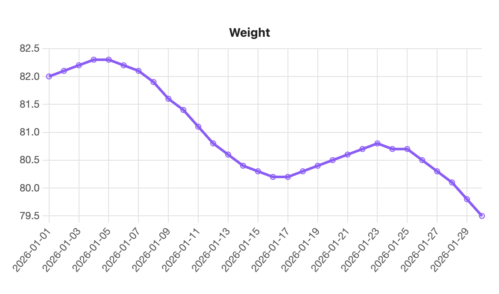
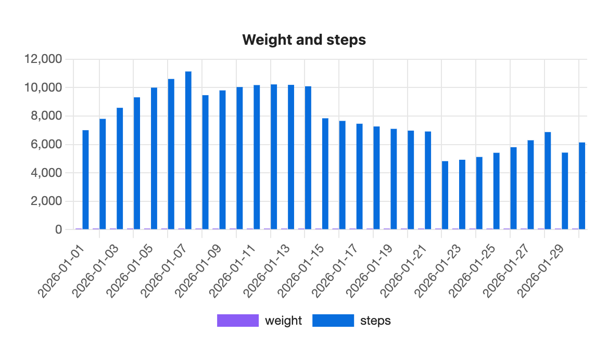

Charts from properties
Instead of a table, a chart can read the properties of many notes, one row per note. This suits daily notes, logs and trackers.

```s-chart
type: line
title: Weight
source: "#daily"
x: date
y: weight
```This chart reads every note tagged #daily. Each note becomes one point: its date property along the bottom, its weight property up the side. A daily note looks like this:
---
tags: [daily]
date: 2026-01-05
weight: 82.3
steps: 8400
---Options
| Option | What it does |
|---|---|
source | Which notes to read. A tag such as "#daily" also matches nested tags like #daily/work. Anything else is a folder path such as Journal/2026, which includes subfolders. |
x | The property for the labels or x axis. Rows are sorted by it. |
y | One property to plot, or several separated by commas. Each is one series. |
There is no --- line and no table. All other options work as usual.
Several properties

```s-chart
type: bar
title: Weight and steps
source: "#daily"
x: date
y: weight, steps
legend: bottom
```Sorting and missing values
- Rows are sorted by
x. Dates writtenYYYY-MM-DDcome out in date order, and numbers sort as numbers. - A note without the
xproperty is skipped, and the chart says how many: "3 notes skipped: no "date" property." - A missing or unreadable
yvalue leaves a gap. - Property names match without regard to capital letters.
Live updates
Change a property in a matching note and the chart updates within half a second, even when the chart is in another note. Adding, renaming or deleting a matching note updates it too.
Speed
2,000 matching notes build and draw in about 55 ms on a laptop.